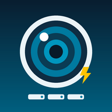
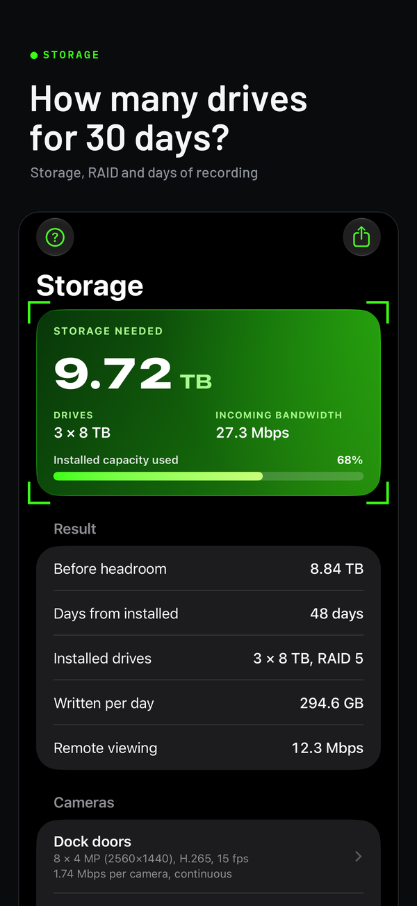

CCTV Calc
Storage, PoE, lens, cabling, fire alarm and notification tools for installers
CCTV Calc
Size the system before you leave the truck.
Storage, PoE, lens, cabling, fire alarm, access control and notification calculators for security and low-voltage installers. iPhone and iPad, offline.
Free to try for 14 days. Storage is always free; unlock Pro once for $14.99.

What it does
Storage
Storage and bandwidth
Enter cameras by group: resolution up to 16 MP and multi-sensor, H.264, H.265 or smart codecs, frame rate, continuous, motion or scheduled recording. Get the terabytes for your retention, the drive count for any drive size with RAID 1, 5, 6 or 10, the incoming bandwidth and the remote-viewing bandwidth. Already have the NVR? Enter its capacity and get the days it will hold.
PoE
PoE budget
Each device's draw and cable length become the power the switch port must source, the voltage at the device, the loss in the cable, the IEEE 802.3af, at or bt class and the switch headroom, plus the longest cable run for that device on Cat5e, Cat6 or CCA, and the UPS runtime for the NVR and switch.
Lens · DORI
Lens and coverage
From the datasheet field of view or the sensor and focal length: scene width, pixels per foot and per meter, and the DORI level (IEC 62676-4) at any distance, or work backwards to the focal length that delivers Identify at a given distance.
Cabling & Audio
Fiber, coax, 70 V lines and low-Z audio
Fiber loss budgets to TIA-568 with an optics margin check, coax loss on RG-59, RG-6 and RG-11 from 5 MHz to 3 GHz with splitters and signal levels, 70/100 V speaker lines (tap totals, amp size and wire loss), and Low-Z Audio 4–16 Ω: the load of speakers in series, parallel or series-parallel, and the loss in the cable.
Fire & Access
Fire alarm battery, NAC and access control power
Fire Alarm Battery & NAC sizes a panel's standby battery to NFPA 72's times with a 25% safety factor, and checks the voltage at the last appliance on a notification circuit. Access Control Power adds up the locks, readers and other devices on a supply, sizes its battery for a UL 294 standby level, and checks the voltage at each lock on normal power and at the end of the battery.
Mass notification
Mass Notification and Giant Voice
Mass Notification sizes the battery to NFPA 72, DoD or European defaults, the amplifier with its spare, the loss on each speaker circuit and the strobe current. Giant Voice works out an outdoor array's coverage radius, how far from it the level stays over 120 dBA, and the site battery.
Voice & paging
Intercom, school PA and speaker coverage
Intercom & Two-Way checks the voltage at each station, data-pair runs and the battery. School PA sizes each zone's amplifier and wire, and the call-in switch runs. Speaker Coverage spaces ceiling speakers for a room, counts them, and works out the level and the power for a target over the ambient.
Reference
Survivability and Guides
Survivability suggests the pathway survivability level to consider for the construction rating and the evacuation strategy. Guides explains the survivability levels and pathway classes, which cable can go where in the US and in Europe, and the compliance notes that change what gets installed. Figures still to confirm in the code book are marked as such.
Jobs are saved on the device. Reports go out as text, PDF or CSV, each with a fingerprint you can check later. Feet or meters, four themes, English, Spanish, Portuguese, German or French.
Questions installers ask
How does the free trial work?
CCTV Calc is free to download, and Storage is free for good. Tap Start 14-day free trial on PoE, Lens or Jobs, or in More → Settings → CCTV Calc Pro, and every tool opens for 14 days. Nothing is charged, and nothing renews. When the trial ends, PoE, Lens, Jobs and reports, My cameras and the tools under More lock until you unlock CCTV Calc Pro with a one-time purchase of $14.99. Nothing is deleted: your jobs, cameras and settings stay on the device, and everything is back as it was when you unlock. Bought CCTV Calc before it was free to download? Everything is already unlocked.
How do I restore my purchase?
On a new iPhone or iPad, or after reinstalling the app, open More → Settings and tap Restore purchases, signed in with the Apple Account you bought with. Pro comes back; there's nothing to pay again.
Why is my storage number different from the camera vendor's calculator?
Vendor calculators use that vendor's bitrate tables. CCTV Calc estimates a typical bitrate from the resolution, codec, frame rate and scene, so the two can differ by 10–30% either way. For an exact match, open the camera's stream settings, read the configured bitrate, and enter it in the group's Configured bitrate field: the app then uses your number instead of the estimate.
Is the PoE result a guarantee the camera will power up?
It is a planning figure that follows the IEEE 802.3 limits and the DC loss in the cable. Two things can still bite on site: a switch whose real output is lower than its rating under load, and copper-clad aluminum cable, which has far more resistance than copper. Enter the switch's actual output voltage and pick CCA when that is what is in the wall, and the app will tell you. Leave 10% of headroom on the switch budget.
What do Detect, Observe, Recognize and Identify mean?
They are the DORI levels from IEC 62676-4: 25, 62.5, 125 and 250 pixels per meter of scene width (about 8, 19, 38 and 76 pixels per foot). Identify is enough to identify a stranger's face; Recognize, a known person; Observe, what someone is doing; Detect, that someone is there.
Feet or meters?
More → Settings → Lengths. Everything re-displays; the results do not change.
Does it need an account or an internet connection?
No account, and it works offline. Purchases and the free trial go through Apple's App Store; the app itself sends nothing anywhere: no analytics, no tracking and no network calls of its own. See Privacy.
Where are my jobs, and what happens if I delete the app?
Jobs live on the device. Deleting the app deletes them, so export the PDF or CSV of anything you need to keep. A purchase isn't lost: restore it as above.
Something is wrong or missing.
Write to the address below with the numbers you entered and the result you expected. Formula corrections get fixed in the next update; every formula is documented on How the math works.
Contact
Support: ryan@ljna2714.com